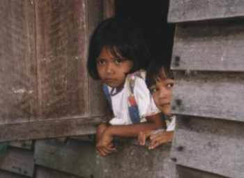
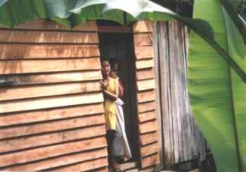
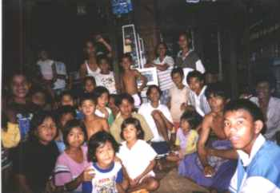
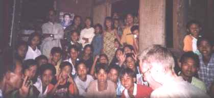
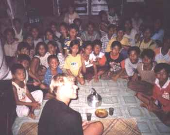
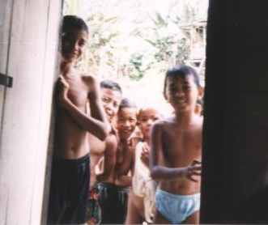

|  |
Longhouse-bewoonstertjes: verlegen en toch nieuwsgierig. |
|  |
Nieuwsgierige longhouse bewoners. Klik hier: longhouse op de kaart |
|  |
Vele kinderen hebben nog nooit een blanke gezien. |
|  |
Het is alsof ze wachten totdat we iets zeggen. |
|  |
Hier in Mawan was de aandacht overweldigend. Gelukkig hadden we op den duur een arsenaal aan grapjes. |
|  |
Toen Steven ziek was en onze kamerdeur even open stond, werd er meteen naar binnen gegluurd. Waar was dit? |